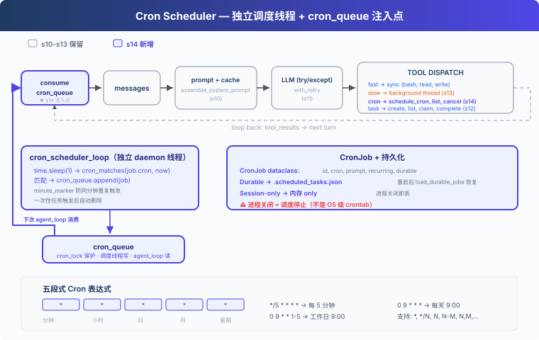

s14: Cron Scheduler — 按时间表生产工作
"按时间表生产工作, 调度与执行解耦" — cron 调度, 持久化或会话级。 Harness 层: 调度 — 独立线程判断时间, 队列传递触发。
On this page
s01 → ... → s12 → s13 → s14 → s15 → s16 → ... → s20
"按时间表生产工作, 调度与执行解耦" — cron 调度, 持久化或会话级。
Harness 层: 调度 — 独立线程判断时间, 队列传递触发。
问题
闹钟不需要你盯着它才会响。你设好 7:00，到点它自己响，你在睡觉、在洗澡、在做饭，它都照响不误。
s13 让 Agent 能后台执行慢操作，但所有操作仍然是你手动触发的。你说一句，Agent 动一下。"每天早上 9 点跑测试"、"每 30 分钟检查 CI 状态"，这些周期性任务不该需要人每次来推。
解决方案

教学代码沿用 S13 的简化任务系统、后台执行和 prompt 组装；为了聚焦调度器，省略完整错误恢复、记忆和技能系统。新增：独立的 cron 调度线程，每秒检查一次，时间到了把任务塞进 cron_queue；再由 queue processor 在 Agent 空闲时自动交付。
手动 vs 定时：
| 手动触发 (s13) | 定时触发 (s14) | |
|---|---|---|
| 触发者 | 用户输入 | 调度线程 |
| 触发时机 | 随时 | cron 表达式指定 |
| 需要人参与 | 是 | 否（调度器自动入队，空闲时自动交付） |
| 持久性 | — | durable 跨重启 |
工作原理
四层模型
Cron 调度分四层：
- Scheduler：daemon 线程，每秒轮询，判断时间到了没有
- Queue：
cron_queue，调度线程写入已触发任务 - Queue Processor：发现队列非空且 Agent 空闲，启动一轮 agent_loop
- Consumer：agent_loop 从队列消费，注入到 messages
教学版实现的是最小 queue processor：用 agent_lock 判断 Agent 是否空闲，空闲时自动交付定时任务。真实 CC 的 useQueueProcessor.ts 还会处理 UI 阻塞、队列优先级和不同消息模式。
CronJob: 数据结构
每个 cron 任务是一个 CronJob 对象：
@dataclass
class CronJob:
id: str
cron: str # "0 9 * * *" (五段式 cron 表达式)
prompt: str # 触发时注入给 Agent 的消息
recurring: bool # True=周期性，False=一次性
durable: bool # True=写磁盘，跨会话保留
Cron 表达式，五段式，Unix 用了 50 年：
分钟 小时 日 月 星期
* * * * * 每分钟
0 9 * * * 每天早上 9:00
*/5 * * * * 每 5 分钟
0 9 * * 1-5 工作日早上 9:00
支持 *、*/N、N、N-M、N,M,...。
cron_matches: 五段式匹配
标准 cron 语义：分钟、小时、月必须全部匹配；日（DOM）和星期（DOW）同时被约束时任一匹配即可（OR）：
def cron_matches(cron_expr: str, dt: datetime) -> bool:
fields = cron_expr.strip().split()
if len(fields) != 5:
return False
minute, hour, dom, month, dow = fields
dow_val = (dt.weekday() + 1) % 7 # Python Monday=0 → cron Sunday=0
m = _cron_field_matches(minute, dt.minute)
h = _cron_field_matches(hour, dt.hour)
dom_ok = _cron_field_matches(dom, dt.day)
month_ok = _cron_field_matches(month, dt.month)
dow_ok = _cron_field_matches(dow, dow_val)
if not (m and h and month_ok):
return False
# DOM and DOW: both constrained → either matching is enough (OR)
dom_unconstrained = dom == "*"
dow_unconstrained = dow == "*"
if dom_unconstrained and dow_unconstrained:
return True
if dom_unconstrained:
return dow_ok
if dow_unconstrained:
return dom_ok
return dom_ok or dow_ok
独立调度线程: 每秒轮询
调度器跑在独立的 daemon 线程里，不依赖 agent_loop 是否在执行。单个 job 异常不会杀掉整个线程：
def cron_scheduler_loop():
while True:
time.sleep(1)
now = datetime.now()
minute_marker = now.strftime("%Y-%m-%d %H:%M")
with cron_lock:
for job in list(scheduled_jobs.values()):
try:
if cron_matches(job.cron, now):
if _last_fired.get(job.id) != minute_marker:
cron_queue.append(job)
_last_fired[job.id] = minute_marker
if not job.recurring:
scheduled_jobs.pop(job.id, None)
if job.durable:
save_durable_jobs()
except Exception as e:
print(f"[cron error] {job.id}: {e}")
关键设计：
- 独立于 agent_loop：即使 agent_loop 没在跑，调度器也在后台检查时间
- date-aware minute_marker：用 "YYYY-MM-DD HH:MM" 防止同一分钟重复触发，同时不会在第二天跳过
- 单 job try/except：一个坏 job 不会拖垮整个调度线程
- 一次性任务：触发后自动从 scheduled_jobs 里删除
Queue Processor + agent_loop: 交付端
queue processor 不检查时间，只负责在队列有任务且 Agent 空闲时拉起一轮执行：
def queue_processor_loop():
while True:
time.sleep(0.2)
if not has_cron_queue():
continue
if not agent_lock.acquire(blocking=False):
continue
try:
if has_cron_queue():
run_agent_turn_locked()
finally:
agent_lock.release()
agent_loop 也不负责检查时间，它只从 cron_queue 里拿已触发的任务，注入到 messages 里：
fired = consume_cron_queue()
for job in fired:
messages.append({"role": "user",
"content": f"[Scheduled] {job.prompt}"})
生产者（调度线程）、交付者（queue processor）和消费者（agent_loop）通过 cron_queue、cron_lock、agent_lock 解耦。
校验：防止坏 cron 杀掉调度器
schedule_job 在注册前校验 cron 表达式，非法的直接返回错误：
def schedule_job(cron, prompt, recurring=True, durable=True):
err = validate_cron(cron)
if err:
return err
# ... register job
从磁盘加载 durable job 时也会跳过非法表达式，避免单个坏任务拖垮启动。
Durable vs Session-only
- Durable：任务定义写进
.scheduled_tasks.json。Agent 重启后加载文件，恢复任务。 - Session-only：只在内存里。Agent 关闭就没了。
重要前提：cron 调度器必须在 Agent 进程内跑。进程关闭，调度也停。Durable 只意味着任务定义跨重启保留，下次 Agent 启动时调度器才会发现"该触发了"并触发。如果需要"即使应用关闭也能定时跑"，请用系统 crontab 或 systemd timer。
合起来跑
1. 启动时：
load_durable_jobs() → 从 .scheduled_tasks.json 恢复持久化任务
Thread(cron_scheduler_loop, daemon=True).start() → 调度线程开始轮询
Thread(queue_processor_loop, daemon=True).start() → 队列处理器等待交付
2. 注册任务：
schedule_cron(cron="*/2 * * * *", prompt="run date", durable=True)
→ CronJob 写入 scheduled_jobs + .scheduled_tasks.json
3. 每 2 分钟：
调度线程检查 → cron_matches 返回 True → cron_queue.append(job)
→ queue processor 发现 Agent 空闲 → agent_loop consume_cron_queue
→ 注入 "[Scheduled] run date"
→ LLM 收到消息，执行 date 命令
4. 关闭进程：
调度线程跟着停（daemon=True）
.scheduled_tasks.json 还在磁盘上
下次启动 → load_durable_jobs → 任务恢复
相对 s13 的变更
| 组件 | 之前 (s13) | 之后 (s14) |
|---|---|---|
| 触发方式 | 用户手动触发 | 调度线程自动入队 |
| 新类型 | — | CronJob dataclass (id, cron, prompt, recurring, durable) |
| 新函数 | — | cron_matches, validate_cron, schedule_job, cancel_job, cron_scheduler_loop, queue_processor_loop |
| 新存储 | — | .scheduled_tasks.json (durable) + 内存 (session-only) |
| 线程 | 后台执行线程 | + 调度线程 (daemon, 1s 轮询) + queue processor 线程 |
| 队列 | background_results | + cron_queue (调度线程写, queue processor 交付, agent_loop 消费) |
| 工具 | 8 (s12/s13) | + schedule_cron, list_crons, cancel_cron (11) |
试一下
cd learn-claude-code
python s14_cron_scheduler/code.py
试试这些 prompt：
Schedule a task to print the current date every 2 minutesList all cron jobsCreate a one-shot reminder in 1 minute to check the build statusCancel the recurring job and verify with list_crons
观察重点：调度线程是否在独立运行？cron 任务是否在正确的时间点触发？不输入新 prompt 时，是否也出现 [queue processor] 并自动执行？durable job 是否写入了 .scheduled_tasks.json？
接下来
一个 Agent 能做很多事了，能计划、能压缩、能后台、能定时。但有些任务太大了，不是一个 Agent 能搞定的。
"重构整个后端"，把认证模块、数据库层、API 路由、测试全部翻新。一个 Agent 的注意力是有限的，这需要一个团队。
s15 Agent Teams → 一个 Agent 不够，组队吧。持久队友 + 异步收件箱。
深入 CC 源码
> 以下基于 CC 源码 `CronCreateTool.ts`、`cronScheduler.ts`、`cron.ts`、`cronTasks.ts`、`cronTasksLock.ts`、`useScheduledTasks.ts`（139 行）的完整分析。 ### 一、三个 Cron 工具 CC 暴露了三个 cron 工具给模型：`CronCreate`、`CronDelete`、`CronList`。全部由编译时门控 `feature('AGENT_TRIGGERS')` 和运行时 GrowthBook 标志 `tengu_kairos_cron` 控制。还有一个 `CLAUDE_CODE_DISABLE_CRON` 环境变量做本地覆盖。 ### 二、存储：`.claude/scheduled_tasks.json`{ "tasks": [{ "id": "abc12345", "cron": "0 9 * * *", "prompt": "...", "recurring": true, "durable": true, "createdAt": 1714567890000 }] }